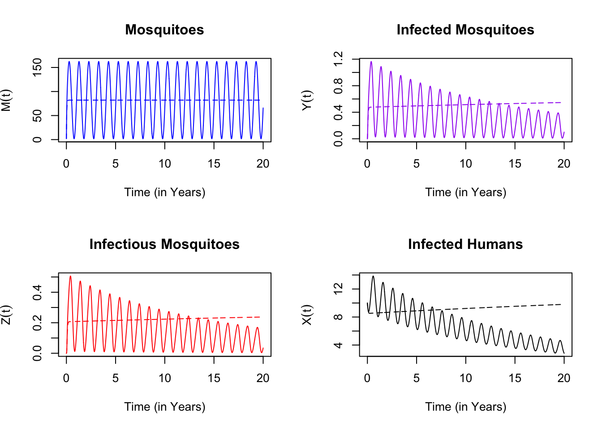

10.2 Steady States
Here, we analyze the system of equations in a narrow case when there is no seasonality, and the system reaches a steady state. To do so, we set the parameter ss=1, so that \(\Lambda(t)\) is a constant; the resulting system is autonomous. We do this, in part, because the resulting system is easier to understand. We can develop intuition that can be applied (albeit with caution) to more complex systems. To be clear, we are dealing with this system:
\[\begin{equation} \begin{array}{rl} \frac{dM}{dt} &= \Lambda - g M \\ \frac{dY}{dt} &= fq\kappa(M-Y) - g Y \\ \frac{dZ}{dt} &= fq\kappa_\tau(M_\tau-Y_\tau)e^{-g\tau} - g Z \\ \frac{dX}{dt} &= h (H-X) - rX \\ \\ \hline \\ \kappa &= c \frac{X(t)}{H} \\ h &= b fq \frac{Z(t)}{H} \\ \end{array} \end{equation}\]
As before, we have put the equations in their modularized form above, and the connecting terms below.
The first thing to note is that \(M\) affects \(Y\) and \(Z\), which affect \(X\); but \(M\) is not affected by \(Y\) or \(Z\). Mosquito population density is exogenous to malaria dynamics.
10.2.1 Mosquito Density
We can thus treat it separately in the analysis:
\[\begin{equation} \frac{dM}{dt} = \Lambda - g M \end{equation}\]
Since emergence rates are steady, mosquito population density reaches a steady state when \(dM/dt=0\), which occurs at:
\[\begin{equation} \bar M = \frac{\Lambda}{g} \end{equation}\]
10.2.2 EIR
Next, we note that at a steady state, the delayed values of variables and terms don’t change, so from \(dY/dt\), we get:
\[\begin{equation} g \bar Y = fq\kappa(\bar M- \bar Y) \end{equation}\]
If we substitute the formula for \(\bar M\) and solve for \(\bar Y\), we get:
\[\begin{equation} \bar Y = \frac{fq\kappa}{g + fq\kappa} \frac{\Lambda}{g} \end{equation}\]
and since at the steady state, any variable at time \(t+\tau\) is equal to its value at time \(t\), we substitute the formula for \(g \bar Y\) into \(dZ/dt\) to get:
\[\begin{equation} g \bar Y e^{-g\tau} = g \bar Z \end{equation}\]
Solving for \(\bar Z\) we get:
\[\begin{equation} \bar Z = \frac{f q \kappa}{g + fq \kappa} \frac{\Lambda}{g} e^{-g\tau} \end{equation}\]
At the steady state, \[\mbox{EIR} = fq \frac{\bar Z}{H}.\]
In field studies, the EIR is the product of the HBR and the sporozoite rate (SR). The sporozoite rate (SR, \(z\)) is given by:
\[\begin{equation} \bar z = \frac{Z}{M} = \frac{f q \kappa}{g + fq \kappa} e^{-g\tau} \end{equation}\]
So we can understand the EIR as having two parts:
\[\begin{equation} \mbox{EIR} = \mbox{HBR} \times \mbox{SR} \end{equation}\]
or equivalently
\[\begin{equation} \mbox{EIR} = \frac{\textstyle{fq\Lambda}}{\textstyle{H}} \times \frac{\textstyle{f q \kappa}}{\textstyle{g + fq \kappa}} e^{-g\tau} \end{equation}\]
This formula for the SR (albeit with slightly different notation) was originally derived as part of the Ross-Macdonald model [42,61]. Also, Smith and McKenzie (2004) have written a useful discussion of mosquito demography [73].
10.2.3 Vectorial Capacity
Here, we pause to define a term that describes the number of human blood meals each mosquito would take over its whole life:
\[S = \frac{fq}{g}.\]
Since \(1/g\) is the mosquito lifespan in days, and \(fq\) is the human blood feeding rate, \(S\) is the number of human bloodmeals a mosquito would take over its lifespan. Intuitively, it makes sense that this should be what drives transmission, since it takes two human blood meals to transmit malaria parasites.
If we rearrange the terms a bit, we can rewrite out the expression for the EIR:
\[\begin{equation} \mbox{EIR}(\kappa) = fq \frac{\bar Z}{H} = \frac{\Lambda}{H} S^2 e^{-g\tau} \frac{\kappa}{1 + S \kappa} \end{equation}\]
This formula for the EIR has two parts. We call the first part vectorial capacity (\(V\)):
\[\begin{equation} V = \frac{\Lambda}{H} S^2 e^{-g\tau} \tag{10.2} \end{equation}\]
The second part is an expression that involves mainly \(\kappa\).
\[\begin{equation} \frac{\kappa}{1 + S \kappa} \tag{10.3} \end{equation}\]
The relationship between VC and EIR at a steady state is a product:
\[\begin{equation} \mbox{EIR}(\kappa) = V \frac{\kappa}{1 + S \kappa} \tag{10.4} \end{equation}\]
Vectorial capacity describes the slope of the EIR when \(\kappa\) is small:
\[\begin{equation} \left. d\frac{\mbox{EIR}(\kappa)}{d\kappa}\right|_{\kappa = 0} = V \tag{10.5} \end{equation}\]
We say that VC describes potential transmission, even if the parasites are absent. Another way to say the same thing is that when \(\kappa\) is small, then:
\[\begin{equation} \mbox{EIR}(\kappa) \approx V \kappa \end{equation}\]
We can interpret vectorial capacity (\(V\)) in simple terms. It describes the number of infective bites that would arise from all the mosquitoes biting a single human on a single day but only if all those mosquitoes became infected. Vectorial capacity tells the story of potential parasite transmission by mosquitoes in four steps, which highlights the fact that two human blood meals are required for the parasite to be transmitted and complete its life-cycle.
\[\begin{equation} \begin{array}{|c|c|c|c|c|c|c|} \Lambda/H & & S \kappa & & e^{-g\tau} & & S \\ & \rightarrow & & \rightarrow & & \rightarrow & \\ \mbox{Mosquito} & & \mbox{Parasite} & & \mbox{Mosquito} && \mbox{Parasite} \\ \mbox{Emerges} & & \mbox{Infects} & & \mbox{Survives} && \mbox{Infects} \\ & & \mbox{Mosquito} & & \mbox{EIP} && \mbox{Human} \end{array} \tag{10.6} \end{equation}\]
As a reminder, while Eq. (10.6) includes \(\kappa\), the formula for VC, in Eq. (10.2), assumes that \(\kappa=1\): the VC describes transmission as if humans were perfectly infectious. It was defined this way on purpose: it was meant to include mosquito parameters and exclude human factors. We can think of VC as defining something like a conditional expectation, a maximum, or (as we have already said) a measure of potential transmission by mosquitoes that is independent of human factors.
While \(\kappa\) (the numerator in Eq.(10.3) accounts for most of the difference between the EIR and the VC, the rest of the difference is due to the denominator in Eq. (10.3), \(1+S\kappa\), which traces back to the formula from \(dY/dt\), which assumes that mosquitoes are either infected or not. The denominator is a measure of saturation – the fraction of mosquitoes that get superinfected with parasites. The main point here is that as \(\kappa\) increases, saturation increases. If we set \(S\) to the values in the previous plots, we can isolate the relationship:
Figure 10.1: The effect (compare the solid and dashed black lines) and effect size of saturation (blue), graphically.
In these formulas, the measure of saturation is exactly \(1+S\kappa\). We could rewrite the relationship between the EIR and VC in a way that tells us something about how we might be underestimating a parasite’s reproductive success:
\[\mbox{EIR}\times (1 + S \kappa) = V \kappa\] which suggests that each infectious bite is passing along an excess \(S\kappa\) bites.
10.2.4 Malaria Prevalence & Thresholds
We let \(x\) denote infection prevalence:
\[\begin{equation} x = \frac{X}{H} \end{equation}\]
so \(\kappa = c x\), and
\[\begin{equation} \frac{dx}{dt} = \frac{1}{H} \frac{dX}{dt} = h (1-x)-r x \end{equation}\]
We can also define the basic reproductive number:
\[\begin{equation} R_0 = \frac{bcV}{r}. \end{equation}\]
It is the product of four terms:
Vectorial capacity, \(V\), the number of infective bites, per person, per day;
The number of days a person would remain infectious, \(1/r\);
The fraction of infectious bites that would infect a human, \(b\);
The fraction of blood meals on infectious humans that would infect a mosquito, \(c\)
After taking their product, we can interpret \(R_0\) as a measure of the parasite’s reproductive success after a single generation. It only depends on where we start counting. It could be one of the following:
the number of infected mosquitoes that would arise from a single infected mosquito;
the number of infectious mosquitoes that would arise from a single infectious mosquito;
the number of infected and infectious humans that would arise from a single infected and infectious human.
Here, \(R_0\) plays an important role in these equations if we start with \(dX/dt\); then transform it to \(dx/dt\); then replace \(h\) with \(bE\); then replace \(\kappa\) with \(cx\); then divide by \(r\); and rearrange:
\[\begin{equation} \frac{1}{r} \frac{dx}{dt} = x \left[R_0 \left(\frac{1-x}{1 + cSx} \right) - 1\right] \end{equation}\]
Since \(x\) is the prevalence, it is always in the interval \([0,1]\). When \(x\) is very close to \(0\), then
\[\begin{equation} \frac{1-x}{1 + cSx} \lesssim 1. \end{equation}\]
and as \(x\) grows very small:
\[\begin{equation} \lim_{x \rightarrow 0} \frac{1-x}{1 + cSx} = 1. \end{equation}\]
It follows that when \(x\) is small, \(dx/dt>0\) if and only if \(R_0 > 1\). Depending on \(R_0\), only one of two possibilities can hold:
either \(R_0<1\), so that \(x=0\) is the steady state;
or \(R_0 > 1\), and the steady state is:
\[\begin{equation} \bar x = \frac{R_0 -1}{R_0 + c S} \end{equation}\]
Since at the steady state, \(\kappa = c \bar x\), we can plug this back into the formulas above to get \(\bar Y\) and \(\bar Z\).
What we’ve learned about these equations is that if mosquito population densities are constant, then malaria reaches a steady state: if \(R_0 >1\), then there is a positive endemic equilibrium, and if \(R_0 < 1\), then malaria is absent from the system. The system is said to be stable – in fact, is is globally asymptotically stable, which means that all the orbits end up converging to the steady state. This statement has been proved many times in many papers, and since this book is focused on policy, we’ll let others worry about proofs.
10.2.5 Checking our Work
An advantage of working in this environment is that we can check our work. One way we could solve these equations would be to run them for a very long time:
We make a parameter set that defines the model:
## [1] 600.00000 211.01706 91.70764 793.10541By plotting it out, we can check to see if we’ve run it for long enough:

We can check our algebra by computing the same quantities, and \(R_0\) and other quantities we care about:
## $std
## M Y Z X
## 600.00000 211.01706 91.70764 793.10541
##
## $extra
## S V R0 x kappa EIR FoI
## 4.5600 0.4520 7.4600 0.7930 0.1190 0.0348 0.0192
##
## $annual
## aEIR aFoI
## 12.7 7.0Now, we can compare directly:
## M Y Z X
## eq1 600 211.0171 91.70764 793.1054
## eq2 600 211.0171 91.70764 793.1054